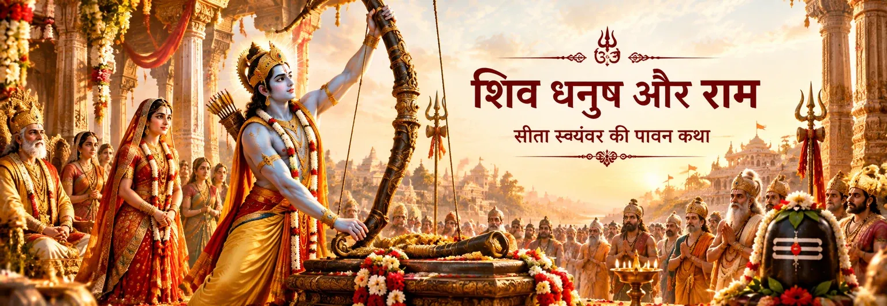

राजपरंपरा में सुरक्षित धनुष
जनक बताते हैं कि उनके वंश के राजा देवरात को यह धनुष शिव से संरक्षण के लिए प्राप्त हुआ था। वे यह भी बताते हैं कि रुद्र ने कभी दक्ष के यज्ञ-विनाश के प्रसंग में इस धनुष को उठाया था।

राम और शिव का पवित्र धनुष
शिव धनुष का टूटना बालकाण्ड के सबसे प्रसिद्ध प्रसंगों में से एक है। वाल्मीकि रामायण में राजा जनक विश्वामित्र को बताते हैं कि यह अद्भुत धनुष विदेह राजपरंपरा में सुरक्षित है और यदि राम इसे चढ़ा सकें, तो वे सीता का विवाह राम से करेंगे। राम पहले धनुष को देखने और हाथ में लेने की इच्छा प्रकट करते हैं; प्रत्यंचा की शक्ति परखते समय धनुष टूट जाता है।
इस कथा में तीन पवित्र सूत्र एक साथ जुड़ते हैं—शिव की दिव्य उपस्थिति, राम की संयमित शक्ति और सीता का विवाह। बाद की भक्तिपरंपराएँ इस प्रसंग को राम–शिव संबंध के और भी गहरे अर्थ देती हैं, पर इसकी मूल कथा को पहले उसके अपने ग्रंथीय संदर्भ में समझना उचित है।
बालकाण्ड की मूल कथा
वाल्मीकि के बालकाण्ड में इस प्रसंग की कथा एक स्पष्ट क्रम में आती है।
जनक बताते हैं कि उनके वंश के राजा देवरात को यह धनुष शिव से संरक्षण के लिए प्राप्त हुआ था। वे यह भी बताते हैं कि रुद्र ने कभी दक्ष के यज्ञ-विनाश के प्रसंग में इस धनुष को उठाया था।
जनक ने कहा था कि यदि राम इस धनुष पर प्रत्यंचा चढ़ा दें, तो वे अपनी पुत्री सीता का विवाह राम से करेंगे। इसलिए धनुष की परीक्षा विवाह की शर्त के रूप में कथा में पहले से स्थापित है।
विश्वामित्र की अनुमति मिलने के बाद राम धनुष को हाथ में लेते हैं और उसे चढ़ाने लगते हैं। वाल्मीकि के वर्णन में धनुष की प्रत्यंचा खींचते समय वह टूट जाता है।
धनुष टूटने की ध्वनि अत्यंत प्रचंड बताई गई है और सभा स्तब्ध हो जाती है। इसके बाद जनक विवाह का प्रस्ताव रखते हैं, विश्वामित्र की स्वीकृति होती है और अयोध्या संदेश भेजा जाता है। यही घटना विवाह-कथा का मार्ग खोलती है।
राम–शिव संबंध को समझना
वाल्मीकि रामायण में धनुष सबसे पहले एक दिव्य और असाधारण वस्तु है, जो जनक के वंश में सुरक्षित है और जिसके साथ स्वयंवर की निर्णायक शर्त जुड़ी है। ग्रंथ स्वयं शिव से इसका संबंध स्थापित करता है—इसे शिव का धनुष बताकर और रुद्र के पूर्व प्रसंग का वर्णन करके।
रामचरितमानस इसी घटना को अत्यंत भक्तिपूर्ण बालकाण्ड के भीतर रखता है। वहाँ राम को शिव का धनुष तोड़ने वाले प्रभु के रूप में स्पष्ट रूप से स्मरण किया गया है और साथ ही सीता की पार्वती-आराधना को भी प्रमुख स्थान मिलता है। इस भक्तिपरक प्रस्तुति में राम, सीता, शिव और पार्वती एक ही पवित्र धार्मिक दृष्टि में जुड़े दिखाई देते हैं।
धनुष-भंग का प्रसंग बालकाण्ड के सीता-स्वयंवर से जुड़ा है। इसे बाद की रामेश्वरम् परंपराओं के साथ नहीं मिलाना चाहिए, जहाँ राम द्वारा शिवलिंग की स्थापना और पूजा का वर्णन मिलता है। दोनों व्यापक राम–शिव भक्ति-परिदृश्य का हिस्सा हैं, पर उनके कथा-संदर्भ अलग हैं।
भक्ति का चिंतन
यह प्रसंग असाधारण शारीरिक शक्ति को गुरु की आज्ञा और पवित्र विधान के अनुशासन के भीतर रखता है।
कथा राम की क्षमता को उनके कर्म से प्रकट होने देती है। घटना से पहले और बाद का उनका आचरण आत्म-प्रदर्शन से अधिक महत्वपूर्ण दिखाई देता है।
धनुष शिव का है और मानस में सीता पार्वती की आराधना भी करती हैं। इस प्रकार विवाह-कथा राम–सीता भक्ति के साथ शिव–पार्वती की पवित्र छवि से भी घिरी रहती है।
धनुष का टूटना कथा का अंत नहीं है। यह आगे के क्रम—स्वीकृति, अयोध्या को संदेश, यात्रा और राम–सीता विवाह—का द्वार खोलता है।
ग्रंथीय संदर्भ
धनुष का मूल प्रसंग वाल्मीकि रामायण के बालकाण्ड, विशेषकर सर्ग 66–67 में मिलता है। रामचरितमानस भी बालकाण्ड में इस घटना को अपनी विशिष्ट भक्तिपूर्ण भाषा में प्रस्तुत करता है। दोनों को साथ पढ़ा जा सकता है, पर उनकी अलग कथा-शैली और धार्मिक दृष्टि का सम्मान करते हुए।
भक्तों के सामान्य प्रश्न
हाँ। बालकाण्ड सर्ग 67 में राम द्वारा धनुष को चढ़ाते समय उसे खींचने पर उसके टूटने का वर्णन है।
जनक ने धनुष चढ़ाने की क्षमता को सीता का विवाह राम से करने की शर्त बनाया था। इसलिए बालकाण्ड की स्वयंवर-कथा में धनुष की परीक्षा केंद्रीय भूमिका निभाती है।
नहीं। दोनों अलग प्रसंग हैं। धनुष की कथा बालकाण्ड के सीता-स्वयंवर से जुड़ी है, जबकि रामेश्वरम् के लिंग की परंपराएँ दक्षिण के पवित्र तीर्थ में राम की शिव-आराधना और स्थापना से संबंधित हैं।
क्योंकि मूल कथा स्वयं इसे शिव का धनुष बताती है, जबकि बाद की भक्तिपरंपराएँ राम के इस कार्य को राम–शिव की व्यापक धार्मिक एकता के संदर्भ में पढ़ती हैं। इसकी व्याख्या ग्रंथ और परंपरा के अनुसार अलग हो सकती है।
शिव का धनुष, सीता की उपस्थिति, विश्वामित्र का मार्गदर्शन और राम का कर्म—ये सब एक ऐसे क्षण में मिलते हैं जो पूरी कथा की दिशा बदल देता है। ध्यान से पढ़ने पर यह प्रसंग केवल शक्ति की कथा नहीं, बल्कि कर्तव्य, पवित्र स्मृति, विवाह और धर्म के क्रमशः प्रकट होने की कथा भी है।